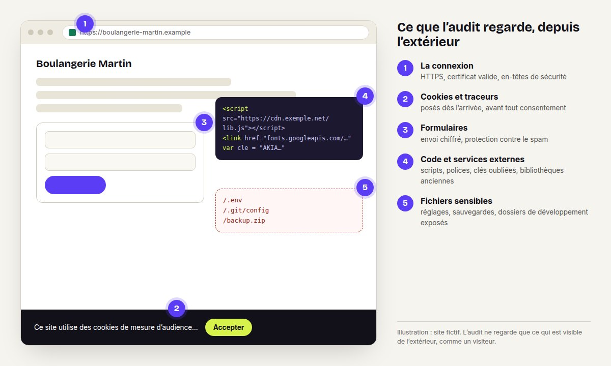
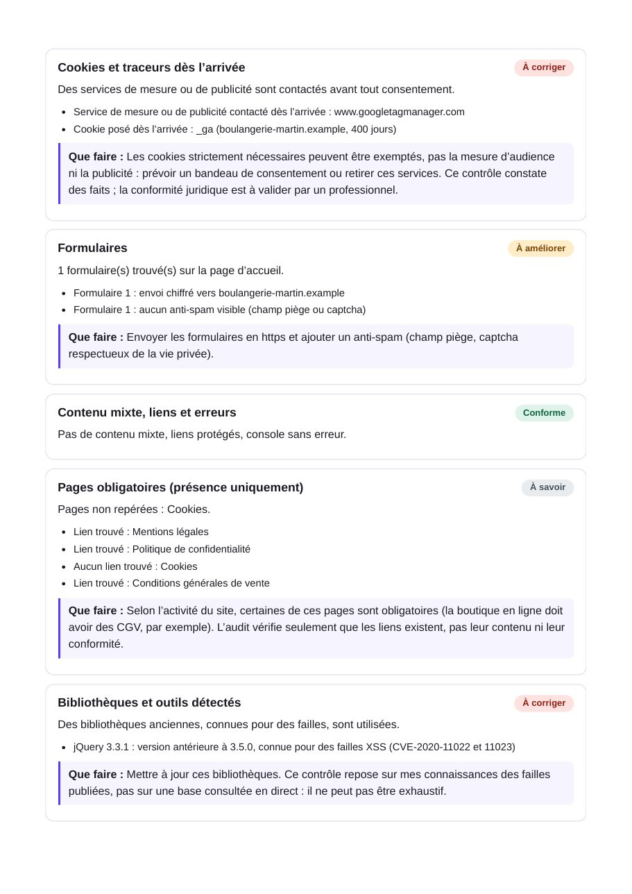
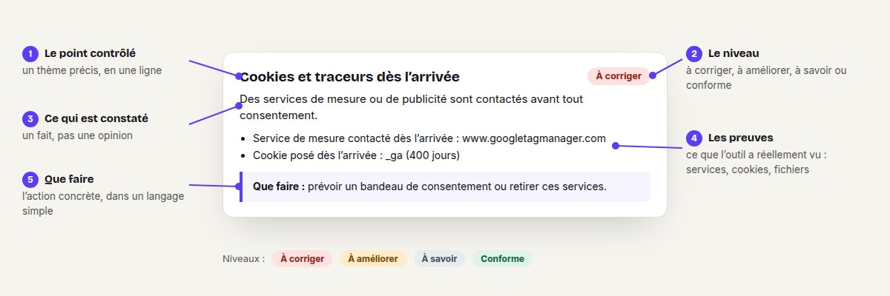

La connexion
- HTTPS et certificat : site chiffré, certificat valide, date d’expiration
- En-têtes de sécurité : les protections que le serveur devrait annoncer
Je contrôle les points essentiels de votre site, ceux qu’un visiteur ou un pirate peut voir de l’extérieur, et je vous remets un rapport clair : ce qui va bien, ce qu’il faut corriger, et comment.

Un rapport PDF de 3 pages, sans jargon : pour chaque point, ce qui a été constaté et ce qu’il faut faire. Exemple sur un site fictif.


Télécharger le rapport d’exemple (PDF) Site et résultats fictifs, à titre d’illustration.

L’audit décrit l’état de votre site à la date du rapport. Ce n’est ni une certification ni une garantie que le site est sécurisé, et il ne remplace pas un avis juridique.
Vous m’indiquez l’adresse de votre site. Devis gratuit, prix fixé avant de commencer.
Je ne contrôle que les sites dont vous êtes le propriétaire ou pour lesquels vous avez l’autorisation. Vous me le confirmez par écrit.
Je lance les vérifications depuis l’extérieur, comme le ferait n’importe quel visiteur. Aucun accès à vos comptes n’est nécessaire.
Vous recevez le PDF sous 48 h ouvrées. Je peux ensuite corriger les points trouvés, sur devis.
Non. C’est un contrôle des points visibles de l’extérieur, rapide et abordable. Un test d’intrusion complet est un travail plus long, fait par des spécialistes de ce métier.
Non, et personne ne peut honnêtement le promettre. Le rapport décrit ce qui a été constaté sur les points listés, à la date indiquée.
Non, pas pour l’audit express : je regarde ce que n’importe quel visiteur peut voir. Si vous me donnez le code de votre site, je peux le relire aussi, sur devis.
Je vous l’explique dans le rapport, avec la marche à suivre. Si vous le souhaitez, je corrige, sur devis, et je vérifie ensuite que c’est réglé.
Uniquement sur vos sites, ou ceux pour lesquels vous avez l’autorisation de leur propriétaire. Jamais sur le site de quelqu’un d’autre.
100 € pour un site, en prix de lancement. TVA non applicable (art. 293 B du CGI). Les corrections éventuelles sont chiffrées à part, avant de commencer.
100 €, rapport PDF sous 48 h, sans rien installer.
Demander l’audit